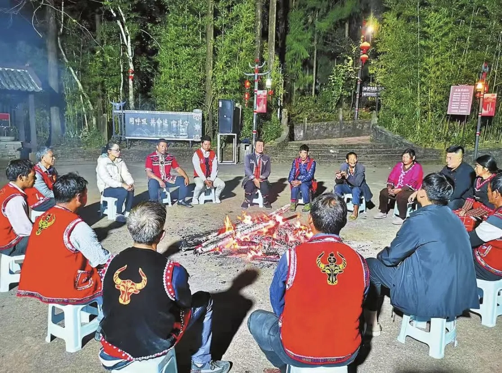
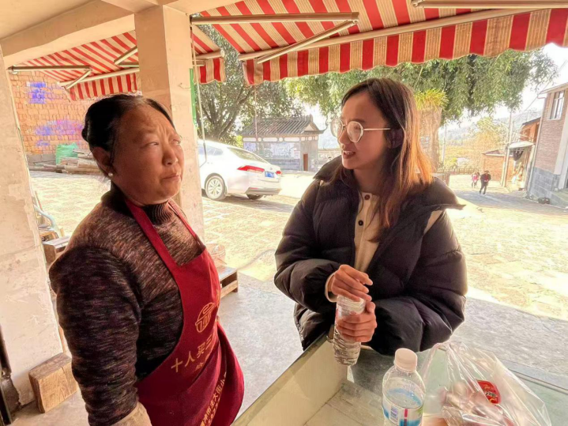
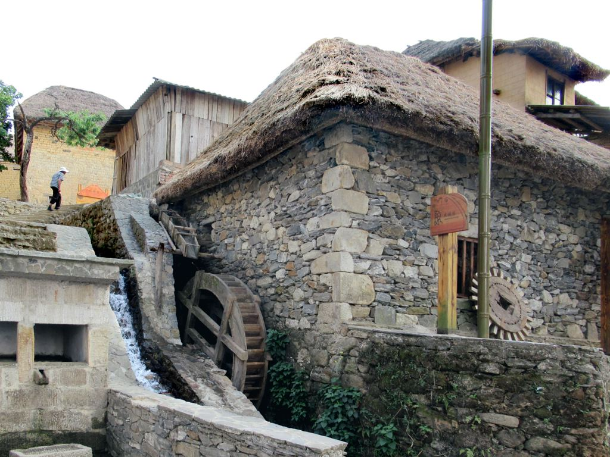

团队说明
核心成员来自高校、研究机构与地方实践领域，长期关注民族地区发展、乡村振兴与文化传播。
了解团队构成模块六
“火塘同心”是围绕司莫拉案例展开的民族团结与中华民族共同体意识科普专题网页。 这里不仅介绍项目与团队，也提供建议反馈、信息纠错和后续维护入口， 让网站在不断补充资料、核验出处和优化表达中持续完善。

开放平台，欢迎更多机构、团队与个人共同参与内容建设与传播
提供资料与案例，共建知识库
开展联合研究，推动学术交流
转发与分享内容，扩大传播影响
参与调研与整理，贡献时间力量
联系当地资源，深化在地连接
联系方式
待补充
待补充
待补充
注：当前版本暂不公开固定联系方式，正式邮箱、指导教师信息与合作单位信息待后续补入。
项目介绍
“火塘同心”是围绕司莫拉案例展开的民族团结与中华民族共同体意识科普专题网页。它以腾冲司莫拉佤族村为真实案例， 围绕党建引领、民族文化、火塘会实践、乡村振兴、边疆治理等内容展开数字化展示。
网站通过大图叙事、概念展板、地图足迹、权威资料和项目概览，把研究内容转化为公众可理解、可浏览、可继续补充的专题页面。 当前版本先完成网页骨架、内容模块和可追溯入口。后续可继续补入团队成员、指导教师、合作单位、正式联系方式、原文链接与项目更新记录。
团队成员与合作信息待补充

团队职责
本网站由项目团队共同维护，按照“内容采集、资料核验、页面设计、技术维护、反馈更新”分工推进。
负责专题结构、页面文案、案例叙事与模块逻辑。
负责权威来源检索、原文链接确认、事实与数据复核。
负责页面风格、图片选择、展板排版与视觉统一。
负责 HTML、CSS、JavaScript 页面开发与响应式适配。
负责收集建议、整理纠错信息并推动页面持续优化。
维护原则
为了保证专题网页长期可信、可读、可更新，当前站点遵循以下维护原则。
政策表述、数据和报道尽量采用政府网站、权威媒体或正式项目材料。
暂未确认的原文、视频、报道链接统一标注“待补”，不伪造来源。
图片、访谈、问卷、调研材料和项目成果可在后续版本继续补充。
页面文字保持清晰、温和、易理解，避免把网页做成难以阅读的材料堆叠。
反馈入口
两个入口各管各的事。建议区适合反馈展示方式、补充素材和表达优化；纠错区用于指出页面中的事实、表述、链接或出处问题。
如果你希望网页增加某个模块、优化视觉呈现、补充调研图片、增加交互功能或调整表达方式，可以在这里提交建议。
如果你发现页面中的事实、数据、原文链接、报道出处或文字表述存在问题，可以在这里提交纠错信息。
联系方式
当前版本暂不公开固定联系方式。后续可在此补入项目邮箱、指导教师、团队负责人或合作单位信息。
更新记录
完成首页、平台总览、权威事实、共同体意识、云南足迹、项目概览、关于我们六大模块设计。
补充原文链接、报道依据与地图节点跳转入口，统一站点结构与专题叙事风格。
接入问卷、访谈、成果文件与更多项目材料，继续完善反馈与勘误流程。
继续浏览
这一页把专题站温和收住，但并不是终点。你可以回到首页再看整体结构，也可以继续从项目页和地图页进入更具体的阅读路径。